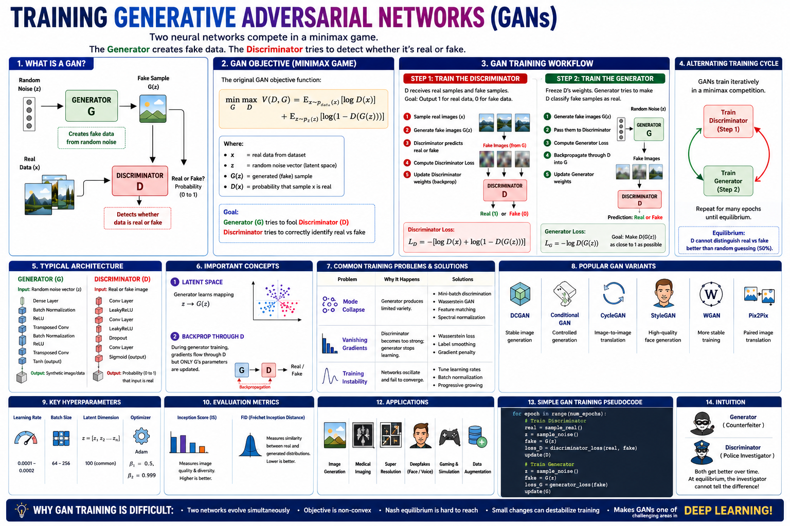

Master the delicate balance of generator and discriminator training for stable, high-quality image synthesis.
Training a GAN involves a two-player minimax game where the generator learns to fool the discriminator and the discriminator learns to tell real from fake. This guide covers the 10 most important hyperparameters for stable GAN training, from latent dimension to gradient penalty, with practical PyTorch examples and a runnable DCGAN demo.

z ~ N(0, I)G: z → xfakeD: x → [0, 1]📊 GAN training overview — noise sampling, generator synthesis, and discriminator feedback loop
Size of the noise vector fed into the generator. Larger dimensions allow richer diversity but increase training complexity.
Number of transposed convolution layers in the generator. Deeper generators synthesize higher-resolution details but are harder to train.
Number of convolutional layers in the discriminator. Must be balanced with the generator to avoid overpowering it.
Separate learning rates for generator and discriminator. Asymmetric rates often stabilize training.
Number of real and fake samples per iteration. Larger batches give more stable gradient estimates for both networks.
GANs typically require many iterations — often tens of thousands — because two networks train simultaneously.
How many discriminator updates per generator update. Training D more often can help it provide better gradient signals.
Adam is standard for GANs. The β1 momentum term strongly affects training dynamics.
The adversarial loss defines the minimax objective. Choices: minimax, non-saturating, Wasserstein, or hinge loss.
Enforces Lipschitz continuity on the discriminator. Crucial for WGAN-GP stability and mode collapse prevention.
A GAN is a two-player minimax game. The generator G maps a random noise vector z to a synthetic sample G(z), while the discriminator D outputs the probability that a given sample is real. Both networks are trained simultaneously through alternating gradient updates.
The minimax formulation is the heart of GAN training. Understanding each component helps diagnose instability, mode collapse, and convergence issues.
Uses transposed convolutions (or upsampling + conv) to progressively increase spatial resolution from the latent vector.
Mirrors the generator but uses strided convolutions to downsample, outputting a single scalar probability.
These settings govern how the adversarial game unfolds and how quickly each network learns.
GANs use separate (often different) learning rates for G and D. Asymmetric rates can help when one network dominates.
Large batches give the discriminator better gradient estimates, improving training signal quality.
GANs need many iterations. Track sample quality — loss values alone are unreliable for GAN convergence.
Adam with reduced β1 (0.5 vs. default 0.9) reduces momentum, helping the generator adapt to shifting discriminator landscapes.
GAN training is inherently unstable. These techniques prevent mode collapse and smooth the optimization landscape.
Penalizes the discriminator for having gradients with norms deviating from 1, enforcing 1-Lipschitz continuity.
Normalizes each discriminator layer's weight matrix by its spectral norm, enforcing Lipschitz constraint without gradient penalty.
Instead of using 1.0 for real and 0.0 for fake labels, use 0.9 and 0.1 to reduce discriminator overconfidence.
Instead of maximizing D output, train G to match the expected features at an intermediate D layer. Reduces mode collapse.
A runnable DCGAN training script. Key hyperparameters are annotated with numbers matching the cards above.
⬆️ Copy & paste into a .py file or Jupyter notebook. All ⑩ hyperparameters are labeled.
| # | Hyperparameter | Purpose | Typical Range / Values |
|---|---|---|---|
| ① | Latent Dimension (z-dim) | Noise input size; controls generation diversity | 100, 128, 256, 512 |
| ② | Generator Depth | Number of upsampling layers for image synthesis | 4–6 layers for 64×64 |
| ③ | Discriminator Depth | Number of downsampling layers for classification | 4–6 layers (mirror G) |
| ④ | Learning Rate (G & D) | Step size for each network; asmmetry can help | 1e-4 to 5e-4 (DCGAN: 2e-4) |
| ⑤ | Batch Size | Gradient estimate quality for discriminator | 32, 64, 128 |
| ⑥ | Epochs / Iterations | Total training duration; monitor sample quality | 100–500 epochs |
| ⑦ | D/G Update Ratio | How many D steps per G step | 1:1 (vanilla), 5:1 (WGAN-GP) |
| ⑧ | Optimizer | Weight update strategy and momentum | Adam (β1=0.5), RMSprop |
| ⑨ | Loss Function | Adversarial objective driving the minimax game | Minimax, Non-saturating, WGAN, Hinge |
| ⑩ | Gradient Penalty / SN | Enforces Lipschitz for stable discriminator | λ=10 (WGAN-GP), Spectral Norm |
Discovered automatically during adversarial training
Set manually before training begins
Use these defaults as your first experiment baseline:
🔬 Tune from here: first adjust learning rates and D/G ratio, then add gradient penalty, then scale architecture depth.
| Feature | Vanilla GAN (DCGAN) | WGAN-GP |
|---|---|---|
| Discriminator Role | Binary classifier (real/fake) | Critic (Wasserstein distance estimator) |
| D Output | Sigmoid → [0, 1] | Linear → ℝ |
| Gradient Stability | ⚠️ Vanishing when D dominates | ✅ Smooth gradients everywhere |
| Lipschitz Enforcement | None (architecture only) | Gradient penalty λ=10 |
| Loss Monitoring | Oscillates; unreliable | Wasserstein distance tracks quality |
| Best For | Simple datasets, quick prototyping | Complex datasets, production-quality generation |
Test your knowledge with 20 questions covering GAN architecture, training dynamics, and hyperparameter selection.